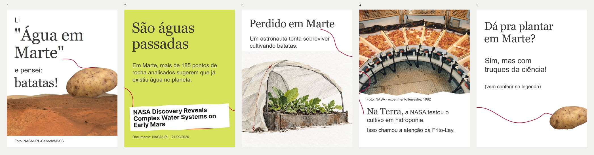
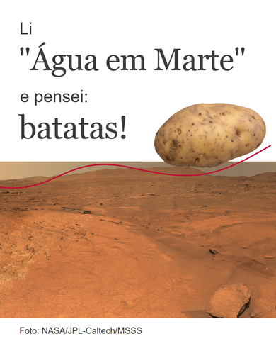
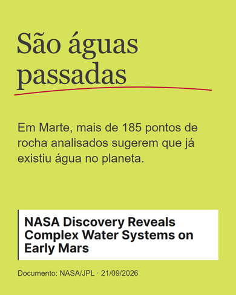
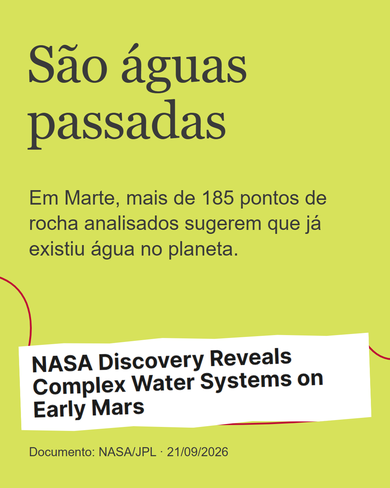
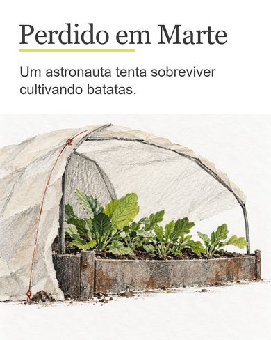
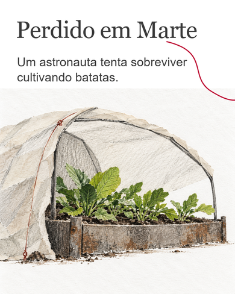
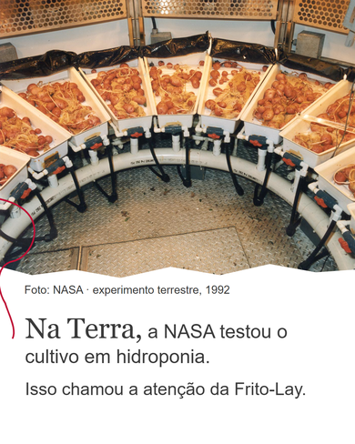
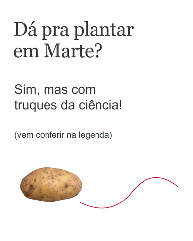
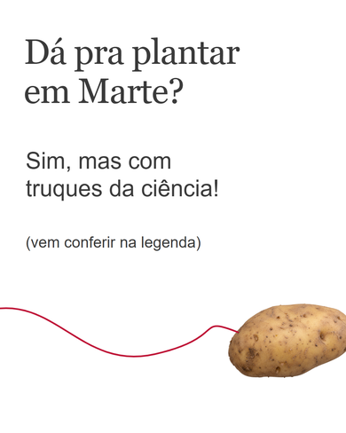
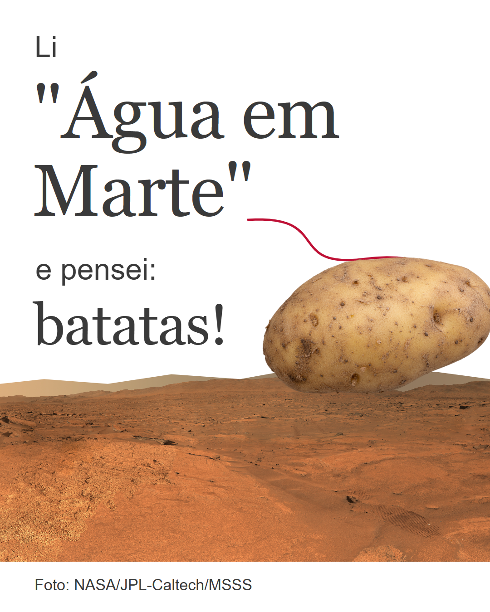

#031 · revisão visual comparativa
Copy aprovada preservada. Batata, contraste documental/conceitual e legibilidade mantidos; recortes e rabiscos com funções distintas. KELL — PUBLISH GATE pendente. Nada publicado ou agendado.
Antes e agora · Baixar V2 · Alt text V2 · Provenance · QA

V2 · conjunto

Comparar por frame
Frame 1 · primeira execução

Frame 1 · V2
Frame 2 · primeira execução

Frame 2 · V2

Frame 3 · primeira execução

Frame 3 · V2

Frame 4 · primeira execução

Frame 4 · V2

Frame 5 · primeira execução

Frame 5 · V2

Arquivos V2




Legenda · revisão adicional encaminhada por Kell
Texto incorporado conforme a revisão mais recente; publicação pendente. Fontes completas no registro de produção.
Os truques da nossa amada ciência não são tão simples quanto parecem. Para cultivar em Marte, seria preciso criar condições controladas para as plantas: água e nutrientes, luz, temperatura, pressão e proteção contra a radiação. É aí que “plantar batatas” vira um belo problema de ciência e engenharia. Os experimentos desta história aconteceram aqui na Terra, usando hidroponia. E os estudos com batatas chegaram a chamar a atenção da Frito-Lay. E a água em Marte? A descoberta que começou essa história está registrada nas rochas e fala do passado do planeta. Não de uma plantação esperando para ser regada. Fontes: NASA/JPL e NASA Kennedy Space Center. Imagens: NASA/JPL-Caltech/MSSS e NASA. Imagem conceitual e recorte da batata produzidos para esta peça.